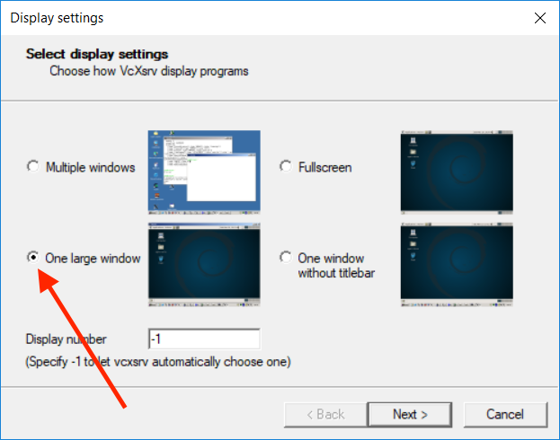
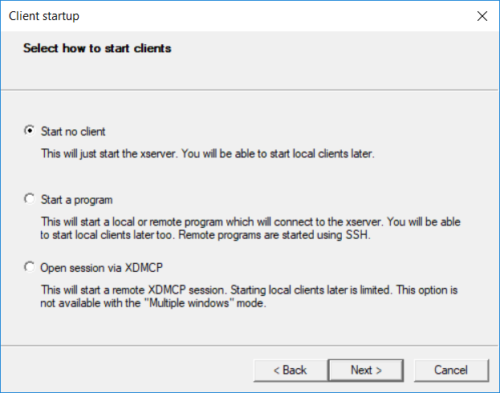
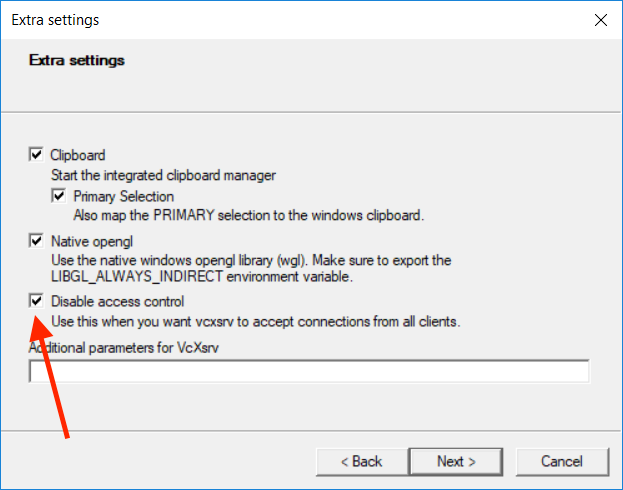
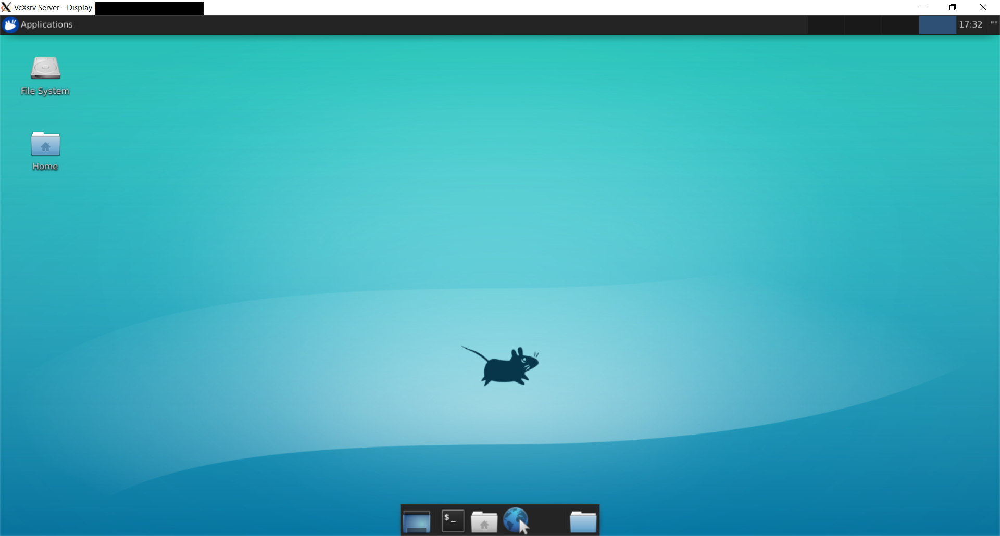
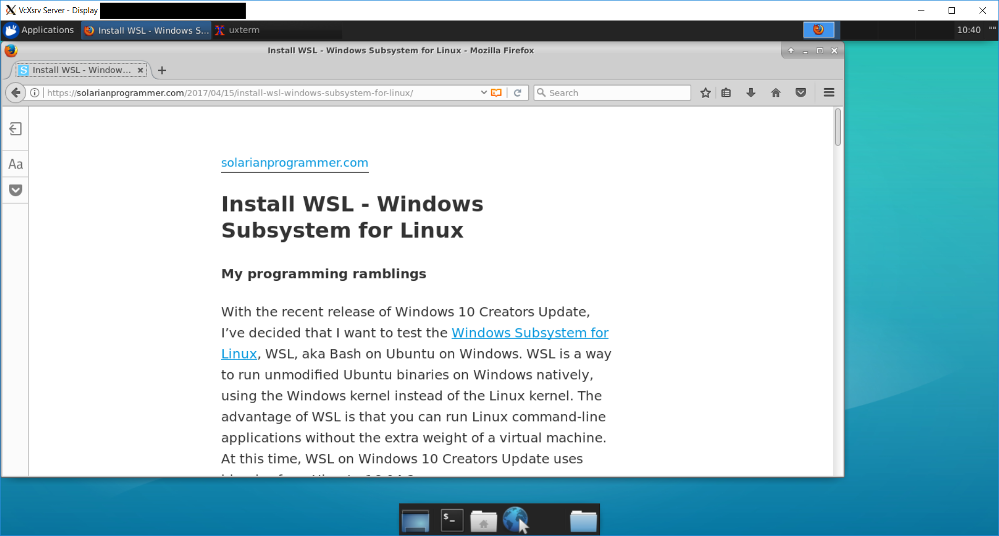

Using the Windows Subsystem for Linux with Xfce 4
Posted on April 16, 2017 by Paul
In my previous article, I’ve shown you how to install WSL, the Windows System for Linux, on a fresh Windows 10 Creators Update. Officially, at the time of this writing, WSL supports only command-line applications. However, you can install graphical Linux applications and run these under WSL if you have an X server like VcXsrv or Xming, on your Windows machine.
Assuming that you have a working WSL installation, start Bash on Ubuntu on Windows, or open a Command Prompt and type bash in it. First step is to install a window manager. From my experience, Xfce works reasonably well with WSL:
1 sudo apt install xfce4Next, you will need to modify the .bashrc file. There are a few text editors that work under WSL. I suggest to use vim or nano, e.g.:
1 cd ~
2 nano .bashrcThe second command from above will open .bashrc in nano and you can scroll to the end of the file and write:
1 export DISPLAY=:0.0Save the modified file by pressing CTRL+X and answering Y when asked if you want to save the file. Close and restart the console window.
Next, you will need to install an X server for Windows. I suggest VcXsrv which works well with WSL. Download and start the installer, you can safely accept the default settings.
After installation, start the XLaunch program and check One Large Window:

On the next screen, keep the default settings:

On the Extra settings screen, check third option Disable access control:

Press Finish.
Now, in the Bash console window, write:
1 xfce4-sessionHere is a screenshot of the system running on my machine:

Some readers reported an error message for the first run of the system, something about VcXsrv fatal error. This usually means that the VcXsrv installer started a background VcXsrv process at the end. You can stop it from the Windows task manager or simply restart your computer. This happens only the first time you run VcXsrv, after a fresh installation. After reboot, start bash and XLaunch as described above.
Keep in mind that running graphical Linux applications is not officially supported by Microsoft, this means that if you find an error you are on your own.
The default Xfce browser doesn’t seem to run under WSL. I suggest to install Firefox if you need a Linux web browser. Open the Terminal application, from the Xfce bottom panel, and write:
1 sudo apt install firefoxHere is Firefox running on my machine on Xfce and WSL:

If you want to learn more about the Linux command-line applications, I would recommend reading The Linux Command Line by William E.Shotts Jr.